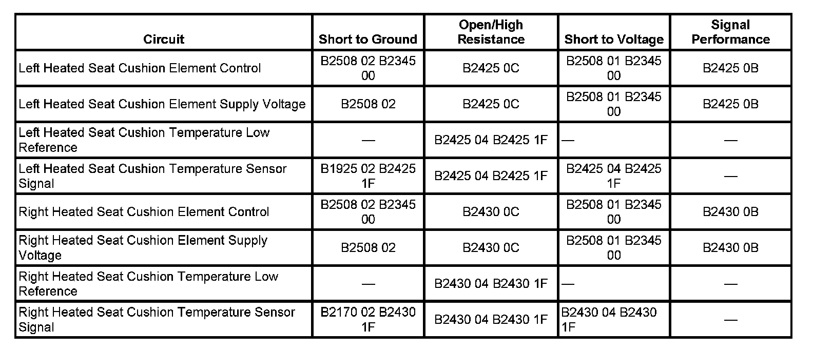

B1925
DTC B1925 OR B1270
DTC DESCRIPTOR
DTC B1925 02
Left Seat Heater Cushion Sensor Circuit Shorted to Ground
DTC B2170 02
Right Seat Heater Cushion Sensor Circuit Shorted to Ground
DIAGNOSTIC FAULT INFORMATION

Perform the Diagnostic System Check - Vehicle prior to using this diagnostic procedure. Initial Inspection and Diagnostic Overview
CIRCUIT/SYSTEM DESCRIPTION
The heated seat temperature sensor that set this diagnostic trouble code (DTC) is located in the seat cushion just under the seat cover with the seat heating element. The temperature sensor is a 2 wire thermistor and resistance through the sensor varies with temperature. The signal circuit is referenced from 5 volts within the module and the temperature of the seat surface determines the signal circuit voltage. Once the seat reaches the set temperature, the module will then cycle the control circuits of the heating elements ON and OFF in order to maintain the desired seat temperature based on the feedback voltage from the sensors.
CONDITIONS FOR RUNNING THE DTC
The memory seat module or rear heated seat module must be powered.
CONDITIONS FOR SETTING THE DTC
The temperature sensor voltage drops below 0.80 volt for more than 1 second.
ACTION TAKEN WHEN THE DTC SETS
The heated seat cushion function for the affected seat will be disabled.
CONDITIONS FOR CLEARING THE DTC
- The current DTC will clear 3 seconds after the reference voltage returns to normal operating range, and the ignition is cycled OFF then back to ACC or RUN.
- A history DTC will clear after 50 ignition cycles or with a scan tool using the clear DTCs function.
CIRCUIT/SYSTEM TESTING
1. Ignition OFF, disconnect the MSM or rear heated seat module harness connector C5 for driver or front passenger seat or C4 for a rear passenger seat.
2. Test for a minimum of 850 ohms of resistance from the signal circuit to ground.
- If less than 850 ohms, test the signal circuit for a short to ground. If the circuit tests normal, replace the seat cushion heater element.
3. If all circuits test normal, replace the MSM or rear heated seat module.
REPAIR INSTRUCTIONS
Perform the Diagnostic Repair Verification after completing the diagnostic procedure.
- Front Seat Cushion Heater Element Replacement
- Rear Seat Cushion Heater Replacement
- Control Module References for the MSM and rear heated seat module replacement, setup, and programming. Verification Tests Programming and Relearning